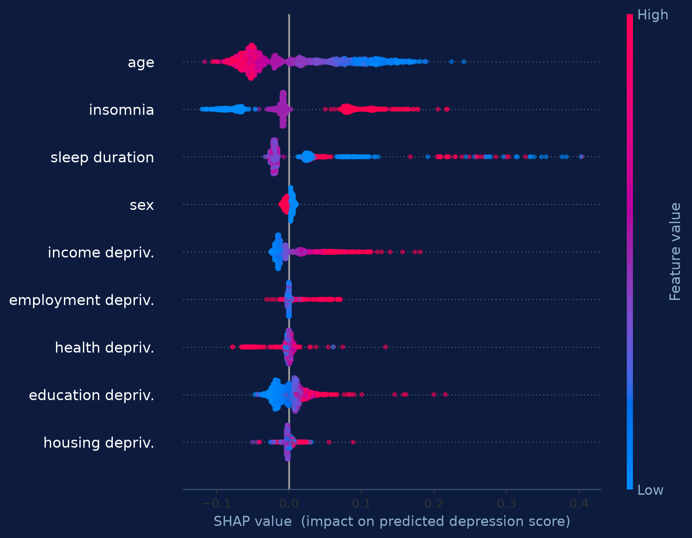
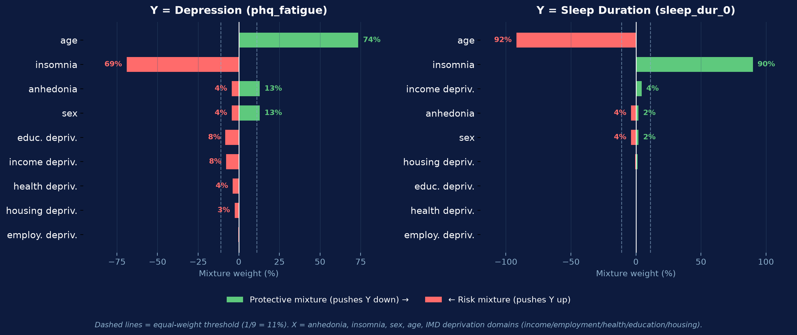
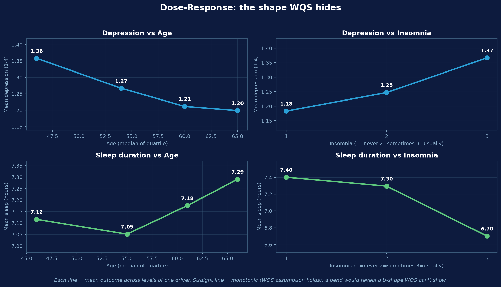
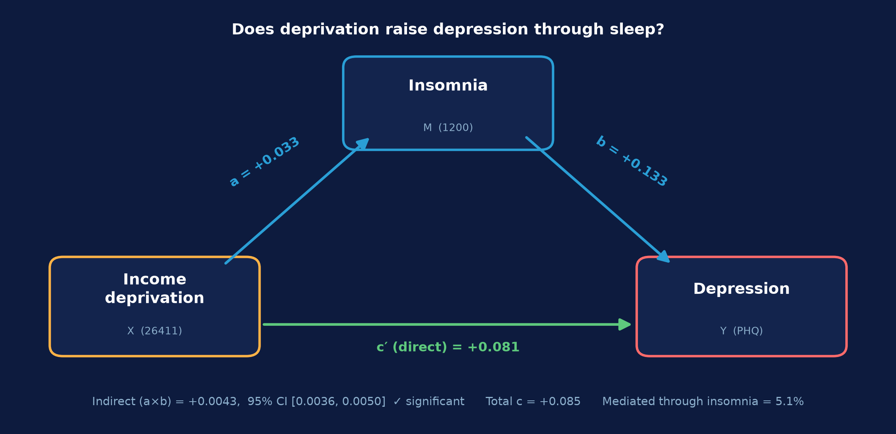

Does the urban environment shape mental health?
This project asks whether the built and socioeconomic environment people live in is associated with their mental health — specifically depression and sleep — and through what pathways. We combine deep-learning features extracted from Google Street View imagery (via a Places365 ResNet-50 model), England deprivation indices, and individual mental-health measures from the UK Biobank, analysed with a stack of complementary statistical methods.
The pipeline at a glance
Places365
Street-view images → 2048-dim scene features
OLS + SHAP
Per-variable effects & importance
WQS
Correlated exposures as one mixture
Mediation
Pathways (e.g. via sleep)
Research question
Core question: Is the urban & socioeconomic environment around a person's home associated with their mental health (depression, sleep) — and does that effect run directly, or indirectly through mechanisms such as sleep disruption?
Sub-questions
- Which individual and environmental factors are the strongest correlates of depression?
- When environmental exposures are highly correlated (pollution, greenness, deprivation), what is their joint effect?
- Does socioeconomic deprivation influence depression partly through sleep?
- Can street-view imagery alone recover meaningful environmental exposures (pollution, greenspace, deprivation)?
Why it matters
Public-health burden
Depression and poor sleep are leading contributors to global disability. Identifying modifiable environmental drivers opens non-clinical levers for prevention.
Urban planning & policy
If features visible in the streetscape (greenery, traffic, density) track mental health, planning decisions become a public-health tool.
Deprivation as a lever
Socioeconomic deprivation is structural and policy-addressable; quantifying its mental-health pathway informs where to intervene.
Scalable measurement
Deriving exposures from imagery + open indices is far cheaper than bespoke environmental surveys, enabling cohort-scale studies.
Background
UK Biobank
A prospective cohort of ~500,000 UK adults (recruited 2006–2010) with deep phenotyping — questionnaires, imaging, genetics, linked health records and home-area indices. Its scale makes population-level environment–health questions tractable.
Places365 (scene recognition)
A convolutional neural network (ResNet-50) pre-trained by MIT CSAIL on 1.8M images across 365 scene categories. Used here as a frozen feature extractor: each street-view image becomes a 2048-dimensional vector describing its visual scene content.
Environmental epidemiology
Builds on mixture-modelling approaches (e.g. Weighted Quantile Sum) developed for correlated environmental exposures, the England Index of Multiple Deprivation, and mediation frameworks for mechanistic questions.
Prior evidence: street-view imagery for health
A growing literature shows that deep-learning features extracted from street-view and satellite imagery predict environmental exposures and health outcomes at population scale — the foundation this project builds on.
Cardiovascular disease
Across 7 US cities, CNN features from ~530k street-view and ~32k aerial images predicted coronary & cardiometabolic disease (R² up to 0.83, beating demographics-only models). Activation maps linked buildings, road types and highways to risk. Chen et al., Eur. Heart J. / JAMA Cardiology 2024
Air pollution
Street-view imagery + mobile/taxi monitoring predicts NO₂, PM₂.₅ and black carbon at street level (Spearman r up to 0.85 for NO₂ in Amsterdam). Multi-angle images at a ~100 m buffer work best. Qi 2021 · Kerckhoffs 2022 · Zhong 2025, ES&T
Health disparities
From 164 million GSV images across 59k US tracts, built-environment features (greenspace, building condition, housing type) partly mediate racial and rural–urban health gaps — housing type mediated 12.8–24.2% of associations. Yang 2023 · Nguyen 2019
Greenery, streetscape & mental health
Eye-level street greenery is linked to recreational physical activity (Hong Kong); intriguingly, street enclosure — not greenery itself — correlated with better mental health in a dense Chinese city, suggesting built form matters. Lu 2019 · Zhang 2022
Methods
Places365 feature extraction
4 street-view headings per location → frozen Places365 ResNet-50 → 2048-dim features (averaged over the 4 views). These features feed regression models that predict environmental metrics.
OLS + SHAP
Ordinary least squares gives interpretable per-variable coefficients; SHAP (on a gradient-boosted model) ranks importance and reveals non-linear / per-person effects that OLS misses.
WQS regression
Weighted Quantile Sum bundles correlated exposures into a single weighted index, estimating one mixture effect plus each variable's weight — robust where OLS coefficients become unstable.
Mediation analysis
Two regressions decompose a total effect into a direct path and an indirect path through a mediator (e.g. sleep). The indirect effect a×b is tested with bootstrap confidence intervals.
Why several methods? OLS/SHAP isolate individual effects; WQS handles correlated exposure mixtures; mediation answers through what mechanism. Together they cross-check each finding.
Data
Cohort rule: participants with a missing depression outcome are dropped entirely (complete-case / listwise deletion), taking 502,128 → 156,438; models additionally require complete predictors (→135,541).
Variables
| Group | Variables (UKB field) | Role |
|---|---|---|
| Depression | PHQ items — anhedonia (20514), fatigue (20510) | Outcome |
| Sleep | Sleep duration (1160), insomnia (1200) | Outcome / predictor |
| Demographics | Sex (31), birth year (34), age (21022) | Covariate |
| Deprivation (England IMD) | Income, employment, health, education, housing (26411–26415) | Predictor |
| Environment (imagery) | Places365 scene features → 16 metrics | Predictor pending |
Missingness
- Demographics & baseline sleep/insomnia: ~complete (<1% missing).
- Deprivation scores: 13.9% missing (England-only — Scotland/Wales excluded).
- Depression (PHQ) items: 68.8% missing (online mental-health follow-up subset).
- Repeat-visit instances unused — analysis uses baseline (instance 0) only.
Missingness is almost entirely structural (who attended which visit / lived in England), not refusal — "prefer not to answer" / "don't know" is ≤0.6% for every field.
Interactive: distribution & power transformation
Pick a variable and drag the slider — the histogram re-transforms live (Box–Cox power λ). λ = 1 is the raw variable; λ = 0 is a log transform. Watch the skewness move toward 0 and the bars line up with the normal curve.
Interactive: correlation matrix
How the variables relate to each other. Notice the deprivation domains (income → housing) form a hot red block — they're correlated 0.6–0.9, which is exactly why a mixture method (WQS) is used instead of separate coefficients. Hover a cell for the value.
Interactive: relationship with depression
Pick a predictor — faint points are individuals, the blue line is the mean depression score within bins of that predictor. Try Sleep duration to see the U-shape (both short and long sleep go with higher depression).
Results
OLS + SHAP — drivers of depression
Outcome = depression score (PHQ items), n = 135,541, R² = 0.039.
| Variable | Std. β | Direction |
|---|---|---|
| Insomnia | +0.069 | ↑ risk *** |
| Age | −0.065 | ↓ protective *** |
| Income deprivation | +0.028 | ↑ risk *** |
| Education deprivation | +0.019 | ↑ risk *** |
| Sleep duration | −0.005 | ↓ *** |
| Sex / other deprivation | ≈ ±0.00 | negligible |

WQS — risk vs protective mixtures
Correlated predictors bundled into mixtures, fit separately for depression and sleep outcomes.

Dose–response — the shape SHAP/WQS hide
Mean outcome across levels of the two dominant drivers — revealing non-linear shapes.

Mediation — does deprivation act through sleep?
Income deprivation → insomnia → depression, n = 135,850.

Build your own regression
Tick the predictors to include (and optionally log-transform each). The OLS model for depression score refits live on a 2,200-row sample of the real data — standardized β, so coefficients are comparable.
Model fit
| Predictor | Std. β | p-value |
|---|
*** p<0.001 · ** p<0.01 · * p<0.05 · computed in your browser via ordinary least squares.
Residual diagnostics
Updates with your model. Left: residuals vs fitted (should be a flat, patternless cloud). Right: normal Q-Q of residuals (points should hug the diagonal if residuals are normal).
What-if prediction
Drag the sliders (one per included predictor) to a hypothetical profile — the model predicts that person's depression score live.
Imagery → environment model
Predicting environmental metrics directly from street-view scene features (Places365 ResNet-50 → per-metric regression heads).
Planned imagery-derived predictors (X)
Built-environment features to be extracted from each participant's home street view and added to the mixture / mediation models:
Green View Index
Proportion of visible greenery (Lu 2019; Zhang 2022)
Street enclosure
Building-to-road enclosure ratio — linked to mental wellbeing
Air pollution
NO₂, PM₂.₅, black carbon modelled from SVI + monitoring
Road network density
Street/intersection density within 500 m of home
Building condition
Well-maintained vs. dilapidated buildings (Yang 2023)
Housing type
% single-family homes — strongest disparity mediator
Planned primary analysis
Regress PHQ-9 depression on the Green View Index and other imagery features, adjusting for age, sex, ethnicity, Townsend deprivation, sleep and home coordinates — using the same OLS / WQS / mediation stack demonstrated on this site.
Requires home geocodes (UKB fields 20074/20075) to link participants to street-view imagery — still being requested. Model results will be populated here once available.
Preliminary single-sample work suggests street-view features predict air pollution, greenspace, deprivation and night-light reasonably (validation R² up to ~0.48 for NO₂), and poorly for noise / blue-space — to be confirmed on the full cohort.
Conclusion
Headline: Among available factors, insomnia is the dominant correlate of depression and age is protective; socioeconomic deprivation (income, education) is a real, smaller driver. Deprivation acts on depression mostly directly, with a small but statistically real pathway through sleep (~5%).
- Insomnia & age dominate every model — consistently, in opposite directions.
- Sleep duration is U-shaped (too little and too much both worse) — captured by SHAP, hidden by linear coefficients.
- Income & education deprivation significantly raise depression; the five deprivation domains are highly correlated, motivating the mixture (WQS) approach.
- Mediation: deprivation → depression is ~95% direct, ~5% via insomnia (CI excludes zero).
- Effect sizes are modest (R² ≈ 0.04) — these are population-level associations, not strong individual predictors, and are associational, not causal.